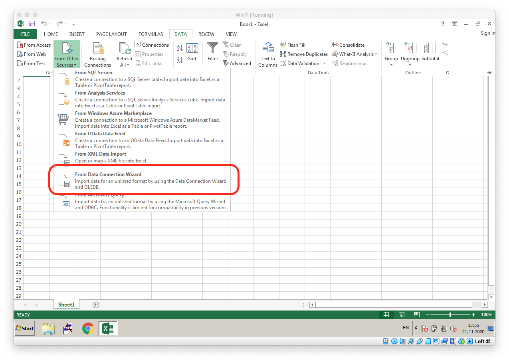
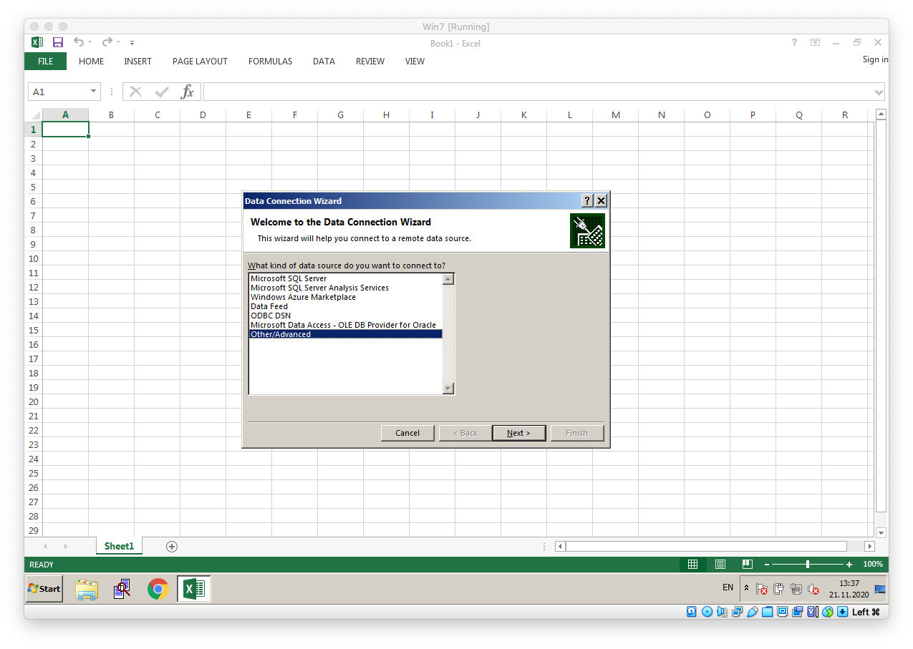
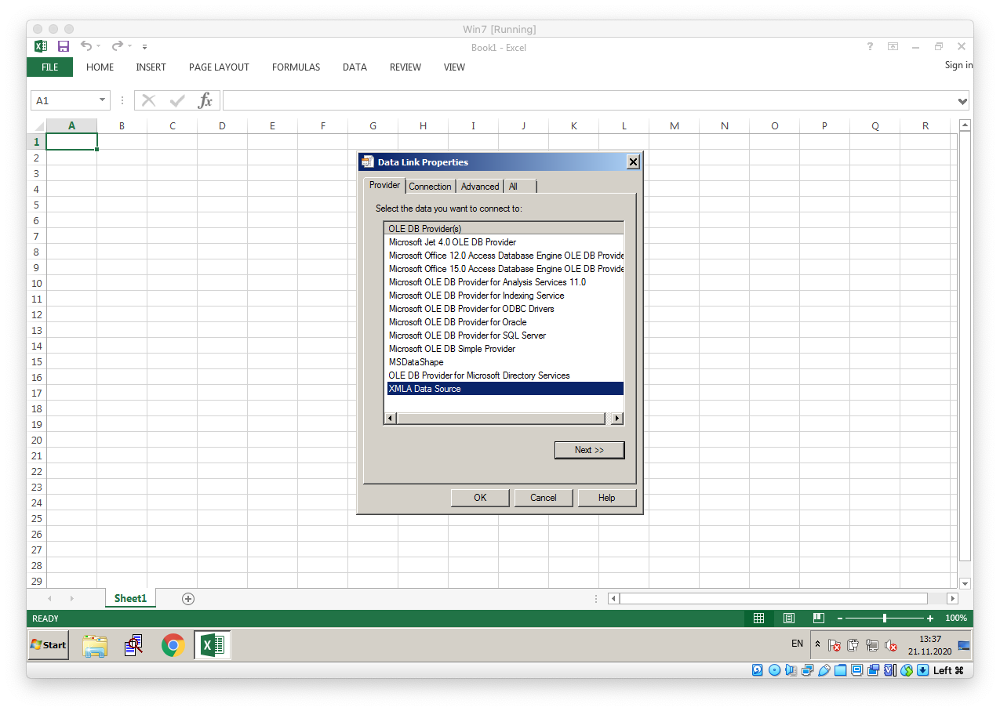
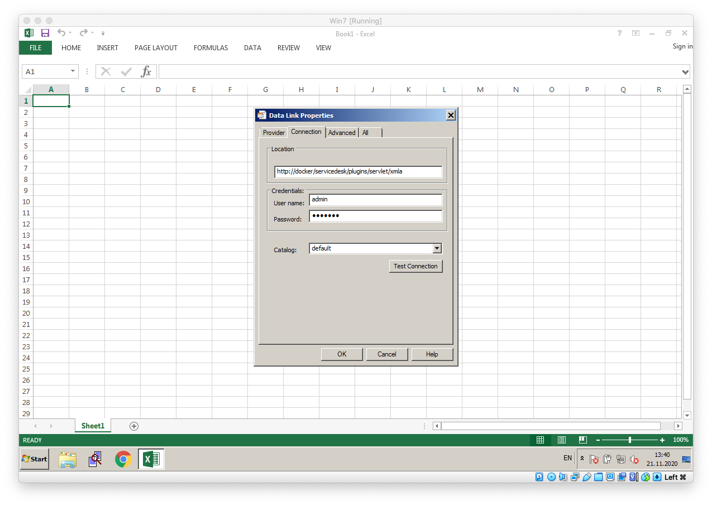
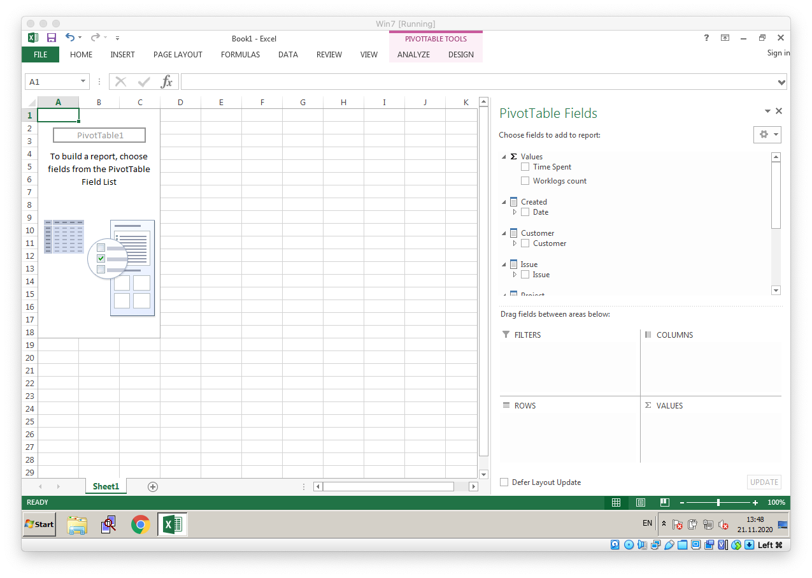
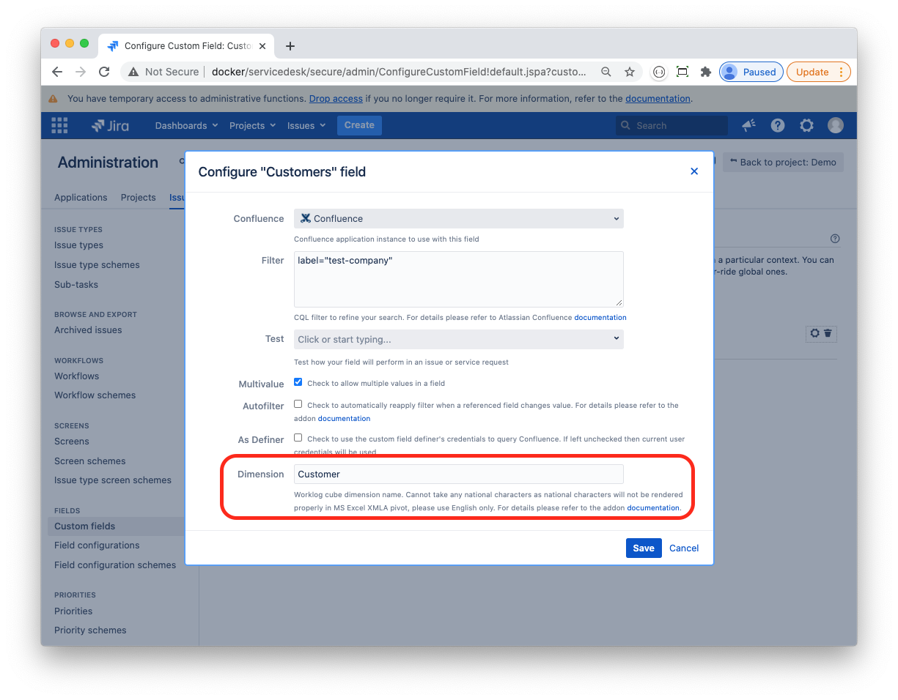
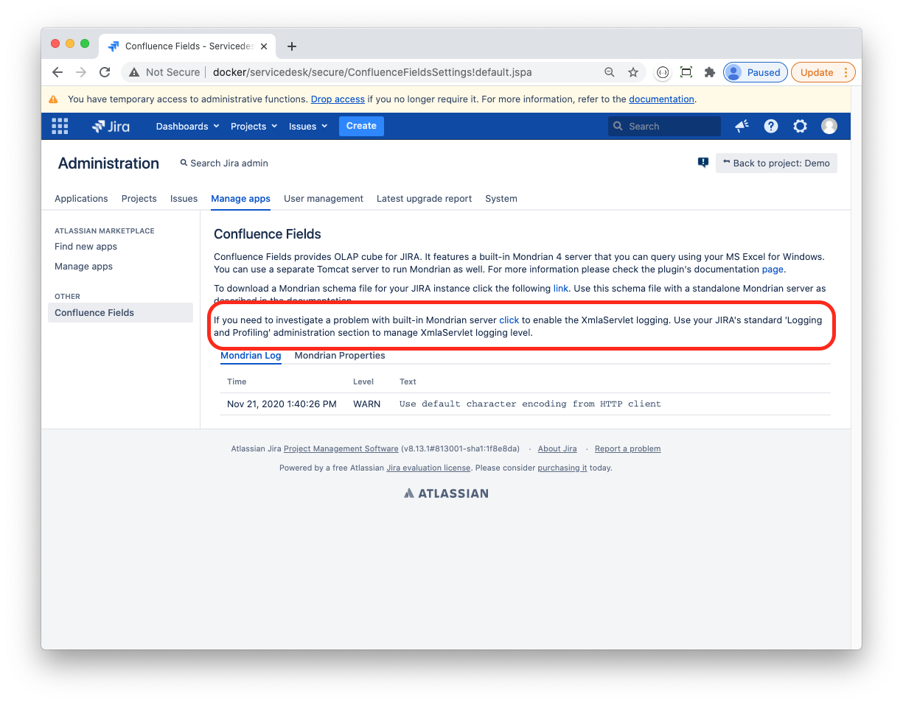
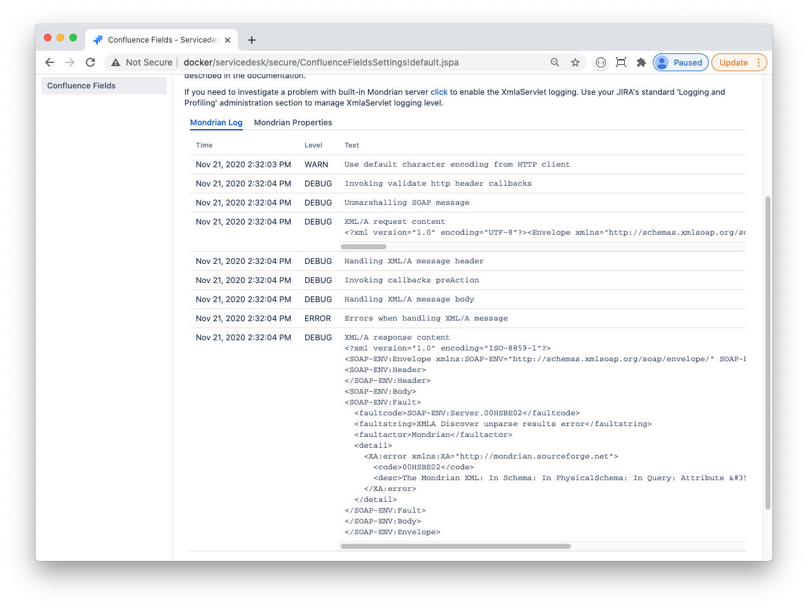

Using Mondrian with Confluence Fields
Confluence Fields plugin for Atlassian JIRA features an embedded Mondrian 4 server that could be used to perform OLAP analysis based on your JIRA worklog. You will need MS Excel for Windows and XMLA Connect for Excel (download from SourceForge). After you install the XMLA Connect use the connection wizard to connect your Excel to JIRA:




The Connection properties should be set as follows:
|
Property |
Description |
|
Location |
http://{JIRA_BASE_ADDRESS}/plugins/servlet/xmla |
|
User name |
Your JIRA username |
|
Password |
Your JIRA password |
|
Catalog |
Select 'default' |
If everything is correct then Test Connection should succeed and you will be able to proceed to Select Database and Table dialog. Choose Worklog and move on leaving all options by default until you finally get your worklog pivot in MS Excel.

Note your Confluence Field is available in the pivot (Customer in the screenshot below):
Confluence Field OLAP Title
JIRA supports national languages for custom field name but XMLA Connect does not. Thus if your field's name is 客户 then you need an option to specify an English synonym. Use Dimension property in the Confluence Field configuration page for that purpose. For more details please refer to Confluence Field Configuration.

Troubleshooting
The builtin Mondrian server uses its own URL classloader to load applicable driver JAR file from your ${JIRA_INSTALLATION_HOME}/lib directory. Driver files are expected to have standard names:
mysql*.jar (com.mysql.jdbc.Driver)
postgresql*.jar (org.postgresql.Driver)
ojdbc*.jar (oracle.jdbc.OracleDriver)
mssql*.jar (com.microsoft.sqlserver.jdbc.SQLServerDriver) or jtds*.jar (net.sourceforge.jtds.jdbc.Driver)
If you driver file has a different name the plugin will not be able to locate and load it. In this case please use external Mondrian server as described below.
Logging
XMLA Connect error messages are not very informative (to say the least). In case you get a connection error or your query fails then XMLA servlet logging could help to diagnose the problem. You can switch on logging at Confluence Fields plugin administration page:

This will set the mondrian.xmla.XmlaServlet logger to DEBUG level. At DEBUG level you will be able to watch XMLA requests and the Mondrian server responses. For example:
 The actual error message is:
<XA:error xmlns:XA="http://mondrian.sourceforge.net"> <code>00HSBE02</code> <desc>The Mondrian XML: In Schema: In PhysicalSchema: In Query: Attribute 'alias' is unset and has no default value.</desc></XA:error>This error means that you did not specify a Dimension property for your Confluence custom field:
Using with External Mondrian Server
As Mondrian server can be quite resource hungry you may choose not to use a built-in Mondrian server but to setup an external one. You can get a WAR-packaged Mondrian 4 server from Github: https://github.com/mesilat/mondrian-jira/releases. Please refer to the project's README if are planning to run your Mondrian server in docker.
Basically, to get your standalone Mondrian server running takes the following steps:
Install Apache Tomcat 9 or later
Download JDBC driver for your JIRA database and copy it to TOMCAT_HOME/lib directory
Edit the TOMCAT_HOME/lib/tomcat-users.xml file and add some users with xmla_user role; these are the credentials Excel will use to connect to your Mondrian server
Deploy the mondrian.war application
Download Mondrian schema file at JIRA Confluence Fields administration page and save it to Tomcat (TOMCAT_HOME/webapps/mondrian/WEB-INF/classes/schemas/default.xml)
Edit TOMCAT_HOME/webapps/mondrian/WEB-INF/classes/datasources.xml and update DataSourceInfo to match your JIRA database connection settings
Edit TOMCAT_HOME/webapps/mondrian/WEB-INF/classes/mondrian.properties if required. For details please refer to Mondrian documentation
Then restart your Tomcat server. Use http://{TOMCAT_ADDRESS}/mondrian/xmla for Location property in Excel XMLA Connect wizard.